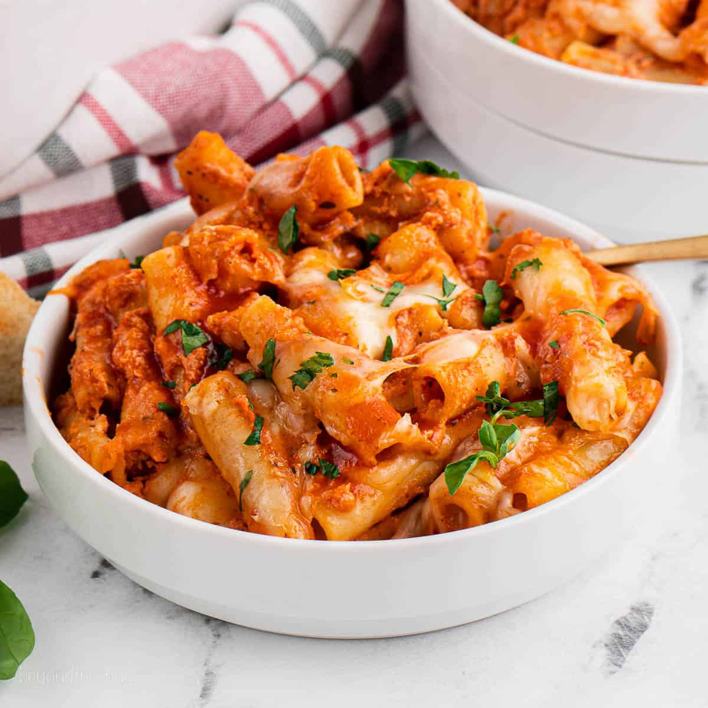

Ziti

Description
Ziti is a type of pasta originating from Italy, characterized by its medium-sized, tube-like shape. It is commonly used in baked pasta dishes, such as baked ziti, where it is mixed with rich tomato sauce, cheese, and often meat or vegetables, then baked to a golden, bubbly perfection. Ziti's hollow center and smooth surface make it perfect for holding sauces, giving each bite a flavorful, hearty taste. It’s a comforting and popular dish for family dinners and gatherings.
Ingredients
-
Ziti pasta
- Marinara or tomato sauce
-
Ricotta cheese
- Mozzarella cheese (shredded)
- Parmesan cheese (grated)
- Ground beef or Italian sausage (optional)
- Garlic (minced)
Fresh basil or parsley (chopped)
Steps
- **Cook the ziti**: Boil the pasta according to package instructions, then drain and set aside.
- **Prepare the sauce**: In a pan, sauté minced garlic and cook ground beef or sausage (if using), then add marinara or tomato sauce and simmer for 10-15 minutes.
- **Mix the cheese**: In a bowl, combine ricotta, shredded mozzarella, and Parmesan, then season with salt and pepper.
- **Layer the ziti**: In a baking dish,
layer cooked ziti, sauce, and cheese mixture. - Repeat layers and top with extra mozzarella.
- **Bake**: Bake at 375°F (190°C) for 20-25 minutes, until the top is golden and bubbly. Let it cool before serving.